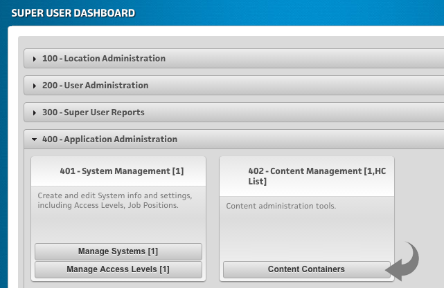
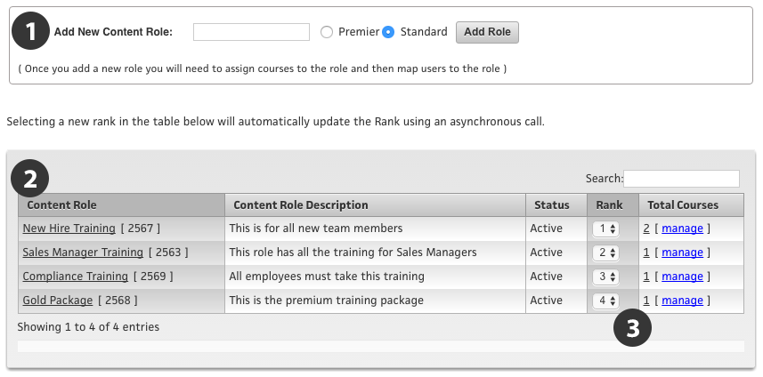
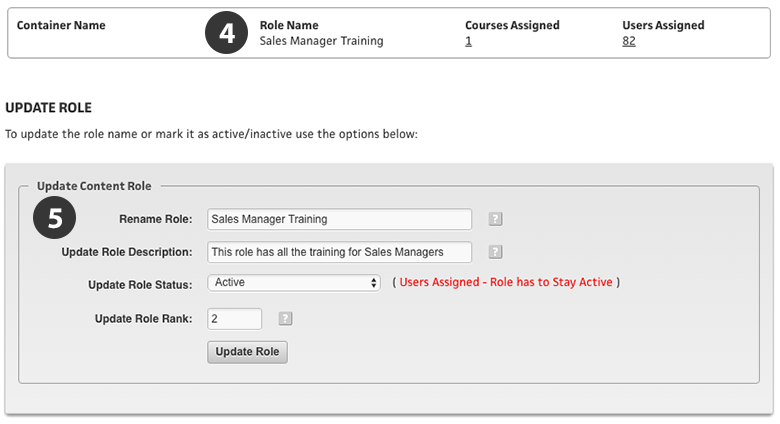
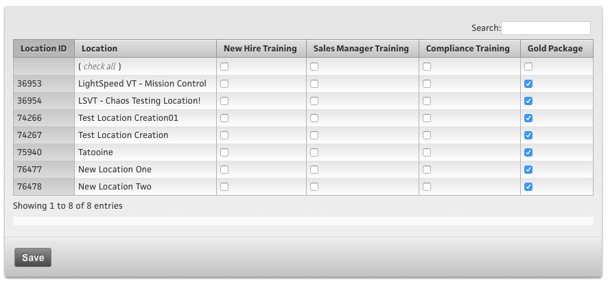
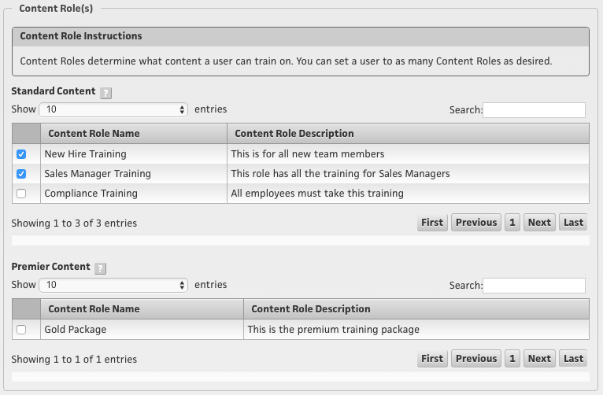
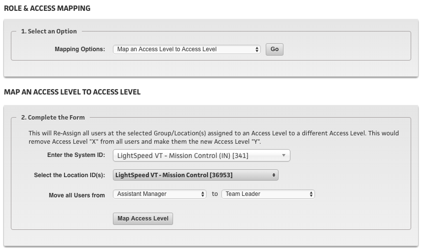
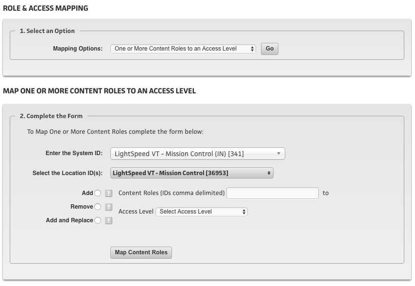
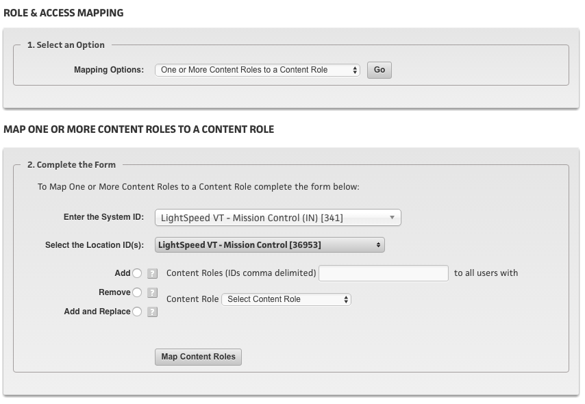

Overview
Your Content Container is the place where all of your Courseware is contained and can be made available to users anywhere in your System (or multiple Systems).
As you create Courses in the Courseware Mgmt tool, they are all automatically added to your Content Container for you.
In short, here are the basic activities you will do in your Content Container:
- See a list of all of your Courses in one view (and the Categories they are in)
- Create new Content Roles and rename existing ones - and add descriptions to your Content Roles
- See a list of Content Roles and add and subtract Courses to these Content Roles in bulk
- See the quantity, and a clickable list of Users (system Wide) that are assigned to each Content Role
- Use a mapping tool to map, and remap users to different Content Roles as desired
- Manage which Content Roles are set to “Premium” by Location
To access the Content Container area, go to the Super User Dashboard, and go to the “402 Content Management” tool and click “Content Containers.”

The four tabs across the top are:
- Content Containers (default view)
- The first view is merely a list of all of the Courses in your Content Container. You can click a Course name of Category name from this view, and go directly to the Courseware Mgmt tool to make edits to your content if you wish.
- Container Roles
- This is where you will administrate all of the Content Roles within your Container
- Role and Access Mapping
- Here are tools to map (or un-map) users to Content Roles in bulk.
- Premium Content
- Here is where you can specify desired Content Roles to be “Premium” by Location.
Content Roles
The Content Roles are the “thing” that actually holds/contains the Courses - from a “provisioning standpoint” (or “privileges standpoint”) - not to be confused with “Categories” which hold/contain the Courses from an organizational standpoint. Content Roles are the actual “Roles” that are assigned to users on the front end. A User can be assigned as many Content Roles as needed.
Here is a corny yesteryear analogy in hopes to help understand how Categories and Content Roles are used to control how users see Courses. Let’s say it’s 1995 and you are going into a video rental store. All of the DVD movies (and maybe even some VHS tapes back in 1995) are “Courses” and each section of the store is a “Category.” There are sections like; Comedy, Sci-Fi, Drama, Romance, etc. So the entire store is like a Content Container, and each of the sections that you can browse in the store are your “Categories.” But now you also have the ability to have these “Content Roles” which can limit, or determine what movies you see in each section. Let’s say you are a Kevin Bacon fan and thus you are a member of a Content Role called ”Six Degrees of Kevin Bacon.” And now, if you are part of that Content Role, you would only see movies with Kevin Bacon in them (or someone that is six degrees of Kevin Bacon), as you browse through each section of your store.
Okay back to the technical stuff. You can create as many Content Roles in your Content Container as you want to, and put as many Courses in each one as you want to also. You can put the same Course in multiple Content Roles if needed too. You can also add a description for each Content Role, so that when you are seeing them on the front end, you can see these descriptions to better describe what type of Courses are in these Content Roles. There is also the ability to ‘rank’ the Content Roles too. This is important, as this is the sort order that these Content Roles appear on the front end of the System, when you are assigning them to users.
Let’s start with the “Content Roles” tab in the Content Container. Here is a walk through of the screenshot below, and some information on each item that you can edit.

1... This is where you create new Content Roles. You can specify here if you want to create it as ‘Standard’ or Premium.’ If you know it is intended to be a Premium Content Role, this saves you some time here, as it will automatically mark it as “Premium” on ALL Locations right now (and save you the step to do that later… but you can always change your mind and do it later too).
Tip
Next to each Content Role name, you will see it’s ID# in a bracket, such as [2563] in this example. Everything in the LSVT System has a unique ID# - be it a System, a Theme, a Location, a Course, a Content Role, etc. - and they are always indicated in a “bracket” like that. This helps you identify them with a unique ID# as well as these ID#’s are used in some of the more advanced config areas of the System as you learn more about them.
2... Here is a list of all of your Content Roles. You can see the name and the description you gave them. This name and description is also seen by users on the front end, so name and describe them carefully. They aren’t marked ‘Standard’ or ‘Premium’ here, because one Content Role may be ‘Standard’ at one Location, but ‘Premium’ at another, and we’ll get in to that shortly.
3... Here is where it shows the ‘Rank’ which determines the sort order that they appear on the front end. You can also see the total number of Courses within a each Content Role (click that number and a pop-up dialog will appear showing you the list of Courses by name) and also a link to “manage”’ the Courses within that Content Role, which is where you can add and subtract Courses within that Content Role as needed. If you click the ‘name’ of the Content Role, you can administrate some further details about it - let’s take a look at that next.

4... In the top area you can see the number of Courses assigned to this Content Role and the number of users that are also assigned to it. Each of those numbers can be clicked to view the list of each.
5... In this area you can edit the name of your Content Role, update the Description of it, make it Inactive if you are wanting to turn it off, and also change the Rank easily too.
Standard vs. Premium Content Roles
A Premium Role is a Content Role that is not visible to be added/selected in the User's profile by standard overseers or managers, but can be added/selected by a Top Admin. This may be useful where there is "Premium Content" that can be purchased by individual users at a location, and by it being a Premium Content Role, a Manager at that location cannot assign this Premium content to a user without oversight by a Top Admin, or a paid transaction. By a paid transaction, I mean that if there is content that can be purchased via an ecommerce transaction, it may be contained in a Premium Content Role, so that standard users and managers cannot add it on their own, without making the purchase or transaction.
The Premium Content Roles will also allow for you to hide desired Content Roles at desired Locations, as it is a "Per Location" Setting. What this means is that if you have some Content Roles that are only applicable for a certain number of Locations and not all Locations, this gives you the ability to "hide" these sensitive Content Roles as needed from certain Locations.
If you have access to Premium Content, you can view and modify this content in two areas: The first area is in the tab in the Content Container area called “‘Premium’ Content, as shown below.

You can see that the first two columns list your Location ID#’s and Names, then each Content Role is listed with a ‘check box’ to allow you to indicate any desired Content Role to be ‘Premium’ at that specific Location. In my example above, the ‘Gold Package’ is a Content Role that I have marked as ‘Premium’ at all of my Locations.
The second area that Premium Content Roles are visible is when you are using the "Manage Users" tool at a Location, or in the Super USer Dashboard. When you select a user to edit their profile, you will see a section below the "Standard Content" section where you can add or remove "Premium" content. In the screenshot below, you can see the entire Content Role area that you would see on each user’s profile, and which ones from our examples above are Standard vs. Premium. I am seeing the Premium Content Roles because
I am viewing it as a Top Admin with that privilege. A regular Overseer (or Manager) at this Location would only see the Standard Content Roles.

You can see in the example screenshot above, that this user is set to two of the Content Roles, so that when they go to the Training Center, they will see the Courses that are inside those two Content Roles, in whatever Categories that those Courses are in.
Content Roles will be a big part of the conversation about Administering your System in a lot of areas, and we will go into more detail in each area where they have different settings that apply to different things, so we’ll be talking about them in many places throughout these Help Docs.
Role and Access Mapping
This is the other tab that is available within the Content Container feature. This is a very powerful tool to map Content Roles to users post launch. As you add new Content Roles, you will likely need to map them to existing users, or even change how some existing Content Roles are assigned, and this is a very flexible tool that gives you several options to do this.
There are three mapping tools for you to use:
1... Map an Access Level to another Access Level
This will Re-Assign all users at the selected System assigned to one Access Level to a different/new Access Level. You can also specify which specific Locations, or ALL Locations. This would remove Access Level "X" from all users and make them the new Access Level "Y."
This is helpful if you decide to change your Access Levels post launch, and you have a bunch of users already in use. You can use this tool to migrate them to a different Access Level if needed.
See the screenshot below as a reference.

2... Map One or More Content Roles to an Access Level
This is helpful if you have a new Content Role, and know exactly what type of user will need it, based on their current Access Level. Or, do the inverse, and remove a Content Role. First, specify which specific Locations, or ALL Locations.
Then select whether you want to “Add” - “Remove” or “Add and Replace” a list of Content Roles, based on a user's Access Level.
See the screenshot below as a reference.

Tip
This tool is handy if you want to completely remove an existing Content Role from everything. You can remove it from each Access Level, one at a time, and unassign it from basically “all” users, as a Content Role won't let you make it Inactive if it has ANY users still assigned to it.
3... Map One or More Content Roles to an existing Content Role
This is similar to the one we just talked about, but this one is helpful if you have a new Content Role, and know exactly what type of user will need it, based on one of their current Content Roles (vs. Access Level). Or, do the inverse and remove a Content Role.
See the screenshot below as a reference.
